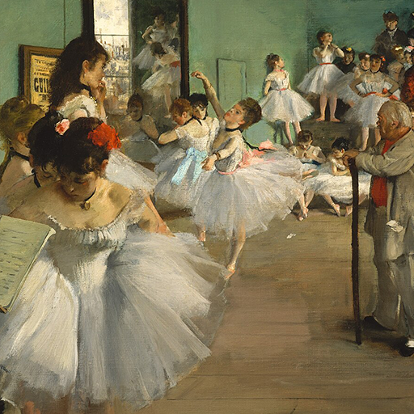

Hexagram 16 – Yu: Joyful Momentum
Upper: Thunder (☳) · Lower: Earth (☷)

Core Meaning
This is a good time to celebrate, share, and enjoy what is going well. Joy can create energy and connection, but it can also make you careless. Enjoy the moment while keeping enough discipline for what comes next.
“I welcome joy without losing my balance.”
Blessing
May your life find a steady, uplifting rhythm and give you real reasons to feel glad.
Guidance by Life Area
Love
The mood between you is light and enjoyable. Create good memories together, but do not use a pleasant atmosphere to avoid important conversations.
Plan something enjoyable together:
- Use a good moment to raise an important topic gently.
- Show appreciation while things feel good.
Career
Team morale is strong and progress is easier. Celebrate milestones, then use that energy to move important work forward and prepare for the next challenge.
Use strong morale to move key work forward:
- Celebrate progress and clarify the next challenge.
- Do not let a relaxed mood become loose discipline.
Health
A good mood can support better habits. Enjoy yourself without overdoing it, and combine fun with regular sleep and activity.
Combine enjoyable activities with regular routines:
- Set limits during celebrations so you do not overextend.
- Use positive energy to support movement.
Finances
There may be income or gains worth celebrating. Set a clear budget for enjoyment so a good moment does not weaken long-term security.
Set a clear budget for fun and celebration:
- Save first when extra money comes in.
- Wait a night before an impulse purchase.
Relationships
Social energy is high and invitations may increase. Enjoy the activity, but keep time for the people who matter after the crowd goes home.
Enjoy gatherings but keep time for important people:
- Invite friends into activities you genuinely enjoy.
- Strengthen relationships after the excitement passes.